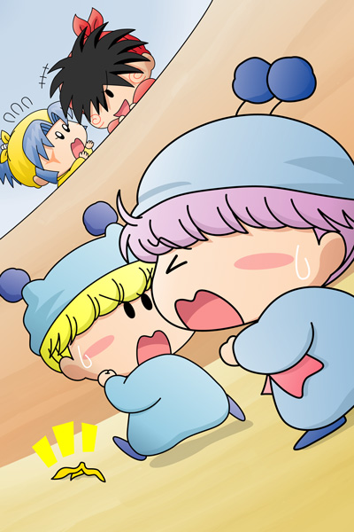

２００７年１月、掲示板にて行いました企画第７弾『2007年こそ活躍して欲しい妖精は？』の結果をまとめましたので報告します。
■ルール
2007年こそ活躍して欲しい妖精を５位、４位、３位、２位、１位の順に５人選びます。皆さんからの投票により各キャラに以下のpointが加算され、最もpointの高い妖精が2007年の活躍を最も活躍されている妖精ということになります。
| １位 … 10point |
| ２位 … 8point |
| ３位 … 6point |
| ４位 … 4point |
| ５位 … 2point |
■結果発表
レインボーさん、雫波さん、れもんさん、ローズマリーさん、アコモさん、シルルさん、ムラサメ・シュンさん、ミルグルさん、ぴろこさん、ハムトラ♪さん、ハルさん、しろうさぎさん、そして私からの投票により以下の順位となりました♪
| １位 | 48point | ミルモ |
| ムルモ | ||
| ３位 | 36point | ヤマネ |
| ４位 | 30point | ヤシチ |
| ５位 | 28point | ネズミ |
| ６位 | 24point | アロマ |
| リルム | ||
| アクミ | ||
| ９位 | 22point | サスケ |
| １０位 | 18point | マンボ |
| ワカバ | ||
| １２位 | 16point | パピィ |
| １３位 | 14point | ハンゾー |
| １４位 | 6point | オトメ |
| キンタ | ||
| ソフト | ||
| センリ | ||
| シャンボ | ||
| １９位 | 2point | アンナ |
| アンリ | ||
| パパン | ||
| ペータ | ||
| ユリン |
何と１位が同pointでミルモとムルモの２人！2007年は兄弟で協力し合って活躍するのか、それとも「最も活躍するのはオレだ！」「ボクでしゅよ」と競い合うのか？とにかくこの二人が公式のメディアの場で再び活躍することを願うばかりです。
３位～５位は個性的な妖精忍者が並びました。ヤマネ＆ヤシチ＆ネズミと言えば１４０話「デビル忍者見参ダゼ！」のドタバタを思い出しますが、ヤマネを巡って今度はヤシチとネズミが真剣勝負して欲しいです。
それでは今回も記念の絵を載せますね。
ミルモ＆ムルモ＆ヤシチ＆ヤマネ(1)

ムルモ「このままだと負けてしまうでしゅ…」
ミルモ「くそーっ、ムルモの奴なかなかしぶといぜ」
ヤシチ「ミルモ！キサマには１位を取らせんぞ！！」
ヤマネ「ヤシチ兄様！妨害はいけないでございますっ」
１位を決めるための対決がマルモ国王に企画されました。そのルールとは、魔法なし＆飛行なしのマラソン対決！ 足が短い妖精にとって、全力で走ることはかなりの試練でしょうね(^◇^;)。
いよいよゴールも間近。ここでヤシチのバナナの皮による妨害が行われるわけですが、ミルモならちゃんとバナナの皮ですべって転んでくれるはずです。優勝はムルモに…と思いきや、この後パピィの妨害があったり、なぜかワルモ団が乱入してそのままゴールしちゃったりと、きっと普通には終わらないだろうなぁ。
ここからは皆さんと私の投票カキコを再掲します。
★こやまる★
５位：ミルモ
リルムと結婚してすっかり落ち着いてしまった感があるけれど、『ミルモでポン！』の復活に向けて我らが王子にはまだまだやることはたくさんあるはず！再び妖精界に一大事が発生して、悪に立ち向かうミルモ、ヤシチやムルモを含めたみんなから頼りにされるミルモを見てみたいです。
４位：サスケ
なかなかヤマネに振り向いてあげないヤシチのスキをみて、ヤマネにもう一度ラブアタックを繰り広げて欲しいです。嫌がるヤマネを見たサスケは新たな恋に生きることを決意し、たとえばカメリちゃんのような素敵なパートナーを見つけて欲しい…とにかくサスケにはもっと幸せになって欲しいです。
３位：ムルモ
私たちのアイドル、ムルモの活躍が無ければムルモ屋本舗も盛り上がらないですね。今年もムルモならではのずるがしこさ…じゃなかった、笑顔で楽しい気分になれそうです。と言いつつも、苦労知らずで要領よく生きてきたムルモに何か新たな試練を与えてみたいなぁと思ってみたりも。
２位：マンボ
怪盗チョコソフトにも登場させているからか、最近カッコいいマンボがやたらと頭の中に浮かんできます。スケートボードでひっくり返って泣いてしまうマンボはどこへやら。常に一生懸命生きようとするマンボなので、今年こそはみんなに認められて「遅咲きのマンボ」と言われる日も近い！？
１位：ヤマネ
ヤシチから妹のような存在としか見てくれないヤマネ、このままでいいはずがありません。とはいえヤシチの目がハートマークになるほどのかわいさが無いことをきっと自覚しているヤマネは、もっと積極的に、そしてわがままになるべきです。今年こそはヤシチのあったかい胸に包まれる日がやって来て欲しいです。
★レインボーさん★
５位：アロマ
気になる彼がいるというアロマちゃん。アロマの性格からすると彼に告白はなかなか出来てなさそうですよね。そんなアロマが勇気を出して、彼に告白するシーンを見てみたい！しかし、その前にアロマの気になる彼が誰なのかが分かりませんとね・・・。
４位：ミルモ
リルムとも結婚して平凡な生活を送っていますが、もっとリルムとラブラブしているシーンを見てみたいです。でもミルモは恥ずかしがりやだから上手く話したり出来るか心配ですけど。更に再び妖精界に危機が迫った時には妖精界を救う為、活躍してほしいです。
３位：パピィ
ムルモになかなか告白できないけど、いつか素直になって告白してほしいですね。かわいい服を着たり髪型を変えたりしてムルモにアタックしてほしいですね。また、ちゃあみんぐ時代のようにまた何か事件を巻き起こす場面も見てみたいですね。
２位：ムルモ
パピィとの恋の進展も見てみたいですが、兄のミルモとの話も見てみたいですね。兄のミルモにイタズラをしたり、罠に陥れたりして裏で笑ってそうです。でも、本当はミルモに甘えたいだけなんでしょうね。ミルモに素直に甘えるムルモ、それに優しく対応するミルモを見てみたいです。
１位：ワカバ
好きな妖精だからという理由もありますけど、ワカバはその後どういう妖精新聞を作っていったのかなと思ったんです。妖精界の真実を伝える為、色々なスクープをネタにして新聞を作っていってそうです。でも、何らかの間違いがあってそれをそのまま新聞に載せてしまい、責められてないか心配です・・・。ワカバには２００７年も妖精新聞で妖精界の真実を伝えていってほしいですね。
★雫波さん★
５位：ハンゾー
いつもぼ～っとしている彼の成長した姿が見たいですｗ 急にしっかり者になってたりとか(笑 頼りないアニキと友達を見守れるぐらいになってほしいものです。
４位：ミルモ
リルムとはどのくらい進展したのか、気になりますｖ やっぱり手つなぐくらいで真っ赤ですかね；でもきっと、よい国王になってくれてますよね！
３位：ムルモ
やっぱりパピィとの関係が気になるところですｖ くっついてラブラブしてるというよりは、今まで通りの関係を保ってるような気がするけど…^^;)
２位：ネズミ
アクミちゃんとはどうなったんだろう？ どっちも素直じゃないので、進展はほぼ無さそうですが； ２年目終わってから出番無かったし、気になります…。
１位：ヤシチ
…好きなキャラって、やっぱりひいきしちゃうものですね^^;) ヤマネちゃんとのことも気になりますが、私としてはミルモとのその後が気になります。結局的にはどっちが勝利したのか…ううむ…；
★れもんさん★
５位：キンタ
アニメでは何回かしか登場しませんでしたが、きっとリルムのことがまだ好きで、またアタックするシーンが見たいです。
４位：ネズミ
アクミとの仲が気になります。また、ヤシチとヤマネをめぐる戦い？がありそう。
３位：ソフト
真理奈とは仲良く暮らしていると思いますが「お好み焼きにマヨネーズをかけるか、かけないか」みたいな喧嘩はありそうで。。アニメではもっと出番があるとよかったです。
２位：ハンゾー
サスケのようにハンゾーの恋のお話も見てみたいです。ほのぼのとした話になりそうですね。
１位：ヤマネ
好きなキャラだから1位にしたのですが・・やっぱりヤシチのことが気になります。でもヤマネの思いはいつかきっとヤシチに伝わりますよね。
★ローズマリーさん★
５位；アンナちゃん
理由；ビケーとのデートの散歩するところが見たいからです。
４位；ヤマネちゃん
理由は、ヤシチ兄(あに)様と一緒にフォークダンスしたいところが見たいからです。
３位；サスケくん
理由は、ヤシチの兄貴に負けないようにヤマネちゃんと一緒にデートしたり、妖精界の図書館で一緒に本を読んだりするところが見たいからです。
２位；ネズミくん
理由は、もし、ダアクや他の子供向け番組のアニメの敵キャラのボスや特撮の敵キャラのボスのような敵のボスキャラが妖精界を狙って、再び妖精界の危機から救ってほしいところが見たいからです。
１位；マンボくん！！
理由は、今年のマンボくんはいろんなことに修行し、かっこよくなるところが見たくて、そしてネズミくんと同じく、もし、ダアクや他の子供向け番組のアニメの敵キャラのボスや特撮の敵キャラのボスのような敵のボスキャラが妖精界を狙って、再び妖精界の危機から救ってほしいところも見たいからです。
★アコモさん★
５位：ペータくん
いつもみんなと楽しそうに遊んでいるシーンばかりでしたが恋物語も見てみたい所、誰か好きな人がいるのかな？今年はすてきな女の子妖精と出会ったり、時には片想い…と恋愛関係で活躍？して欲しいです。
４位：ヤシチくん
いつも痛い目に遭ってばかりいるヤシチ、たまには良い思いをして欲しいですね。でもオトメの時のようにとんでもないオチが用意されていたりして…^^;
３位：ムルモちゃん
パピィちゃんとの関係がとても気になりますね、恋する妖精パピィ編の続編は雨降って地固まるで楽しい二人の物語に期待したい？です。
２位：リルムちゃん
剛力が前面に出ておてんばな所が目立つリルムちゃんですが、もっと女の子らしいシーンを見てみたいですね。おいしい料理を作る練習や、ヤマネちゃんやパピィちゃんたちの良き相談相手としても活躍して欲しいです。
１位：ミルモくん
第１王子だけれど普通の男の子妖精、みんなと一緒でいたい…なんて苦悩も増していきそうですが、「運命は変えられなくても人生は変えられる」とミルモ流で良い方向へ向かっていきそうですね。リルムちゃんやペータくんたち仲間と楽しい日々がこれからも続いて欲しいですし、これからも小さな水色の妖精さんに頑張ってもらいたいです。
★シルルさん★
５位：ヤマネ
ヤシチの恋が叶うといいですよね。お菓子癖が悪いということで何回もミルモ達を助けたことがありますし。色々と頑張ってもらいたいです。
４位：ヤシチ
いつも世話係をさせられてかわいそううだと思いました。でも、いざという時にパートナーを助けたりするところがかっこいいですね。忍者の腕もあげてほしいです。
３位：リルム
不味い料理の腕をあげてほしいです。
２位：ムルモ
パピィとの恋の関係も上手くいってほしいところですが、私は他の妖精でも合うような気はしています。
１位：ミルモ
やっぱり１位は主役になりました。性格はひねくれてわがままだけど、パートナーの思いが一番強くて、普段見せない涙には感動した場面もあります。王子なのに気品がないというのも面白い特徴ですよね。これからもミルモはミルモらしくしてほしいです。
★ムラサメ・シュンさん★
５位サスケ
ヤマネに片思いで終わってしまいましたがくじけず自分の正しき道を探してもらいたい所です。
４位アロマ
うろ覚えなのですが思い人の彼がいると劇中で言っていたのでその後がかなり謎です。また主に登場した話は１話ちょこんとでた話ありますが謎の部分が多すぎるので、本編後どうなったか知りたいですね。
３位ヤシチ
いつも大変なヤシチ君ですがいつかがんばって苦労が報われるのを見てみたいです。（余談ですが・・・私の母はヤシチ君が好きですね。・・・・）
２位パピィ
ムルモに素直に気持ちを伝えたいけど・・・・上手く気持ちを伝えられない不器用な所があるのでムルモに上手に気持ちを伝えれるようにがんばってもらいものです。
１位ミルモ
やはりこの１位は主役のミルモ以外をおいてないと思います。まさに不動の主人公本編が終わった後どうなったのかミルモはどうしているのかが期待したいところです。また王子なのに気品が無くへそ曲がりだけどホントにやるときはやり、友の為に泣く心まで持っているので（わんだほうの最後にタコスが倒れた時に実際に男泣きしています。）悲観し絶望した者を強い心で励ましているので。（ダアク編でダアクが復活後楓達におまえたちの憎しみが私をつくり出したのだという台詞に対し強い心で励ましているのであそこは本当に共感できました。）なのでこの作品を輝かせるベストなキャラクターと言えます。なので２００７年も活躍して欲しいです。
★ミルグルさん★
５位：ユリン
イチローと結婚まであと一歩のところだったユリン。ゴローとはその後良い関係を築けているのか気になります。
４位：サスケ
ヤシチの子分として少し成長した姿を見せてほしいです。またくじけずヤマネへのアタックを続けてほしいです。それとハンゾーとの友情も永遠であってほしいです。
３位：オトメ
終盤全く出てこなかったオトメ。きっと今でもヤシチのことを狙っているでしょう。ヤマネとの絡みで是非見てみたいですね。
２位：ワカバ
ニュース三人娘の代表としてワカバです。レインボーさんと同じくどんな妖精新聞を作ったのか知りたいですね。一回限りが惜しいです。
１位：アロマ
結局謎のままであった幼馴染の彼はどうなったのか。一回限りとは惜しいです。ムルモやパピィを巻き込んでそういう話を作ってほしかったですね。
★ぴろこさん★
★５位：アンリ
こやまるさんの妖精占いを見ていて、アンリが一目惚れするタイプはどんな妖精だろうと考えてしまいました。種族を超えた恋は禁じられていないと仮定(？)すれば、なんとなくお似合いの妖精が思い浮かぶような。。。(だれだ？)
★４位：サスケ
とても切ないですが、ヤマネへの想いもサスケらしくて見守ってあげたい気持ちもあります。サスケに振り向かない子っているの？？と思ってしまうくらい、なかなか出会えない貴重な存在だと思います。でもきっとらぶらぶな恋人ができても、いつまでも初々しいサスケでいてくれそうです。
★３位：ヤシチ
オトメとの恋の傷心(？)からそろそろ立ち直って、次の恋へと向かってほしいです。そしてふと周りを見るとかわいい子はたくさんいるはずです。ヤマネ、サスケとはドロドロにならないヤシチの思いやりも、そろそろ新たな展開があるような。。。という期待です。
★２位：ミルモ
次期国王として新たに修行の旅に出るという展開で、もちろん他の妖精たちもついてきてしまって、ドタバタ感動劇に発展してほしいです。原作でもありましたが、強さも弱さもみせながら国王にふさわしい大きな成長をとげていく姿をみたいなと思います。
★１位：ムルモ
国王になったミルモを助ける賢いムルモ。そしてそんなムルモに惹かれる隣国(？)のお姫様たちがぞくぞくと登場することを想像してしまいます。なんだかんだ言って最終的にはパピィに優しいムルモですが、個人的には、モテモテで自分のプリティさをさらなる武器にするムルモが見たいです。パピィと他のお姫様たちとの間に繰り広げられるムルモをめぐるバトル(>o<)。きっとパピィもムルモに素直にならずにはいられないはず(！)と思います。
★ハムトラ♪さん★
第５位：怪盗パパン
捕まってしまった後、彼は一体どうなってしまったのか非常に気になっています。恐らくあのまま大人しくしているとは思いませんが…。是非また妖精界を轟かせるような大騒ぎを起こして、ミルモくん達との対決を見て見たいものです。
第４位：キンタくん
ミルモくんとの本当の勝負の決着、是非とも付けてもらいたいですね。このままではリルムちゃんも気が気じゃないと思うので…。
第３位：アクミちゃん
ドイツで一度会って以降、多分ミルモくん達とは今でもたまに会っていて、揉め合いや争い等を起こして楽しく過ごしていそうです。アクミちゃんと関わると、毎回そのような感じがしますので…。^^;是非ともまたいろいろと大騒ぎを起こして、ミルモくん達を驚かせて欲しいです。ちなみに日本に戻ってきて、昔のようにミルモくん達と戦う展開になるのも面白そうですね。勿論その時は、ワルモ団とネズミさんの絡みも忘れずに…。（ぉ
第２位：ネズミさん
ダアクとの決戦後、ネズミさんはアクミちゃんとはどうやら関わっていないようですが、それでもその後、お互いに親しい仲なのか赤の他人の関係なのかが気になります。お互い、良いコンビネーションでしたからね。それにヤシチくんとの仲もあの後どうなっているのか、こちらも気になったりもしています。ですが相変わらず喧嘩をしていそうですが…。^^;
第１位：ヤマネちゃん
やはりヤシチくんとの恋の行方が非常に気になっています。今でも恐らく相変わらず恋の進展はあまり無いのでしょうけれど、いつかは結ばれる日が来ることを私も願ってやまないです。でもそのためにはヤマネちゃんは積極的になり、リルムちゃんやパピィちゃんみたいに日々アタックし続けなければ難しそうですが…。
★ハルさん★
５位：パピィ
長期に渡って放送されたミルポンアニメと原作の中で、結局ムルモに好きだとは言えなかったパピィ。（多分両思いなんでしょうが＾＾）ぜひともパピィにはムルモに直接告白し、正式なカップルとしてデートしてもらいたい！！（ムルモに告白するシーンを見たいというのもあります＾＾）ということで接戦を制して５位に入りました。
４位：ムルモ
ムモデレラやムモ太郎の話をはじめ、フェアリンピックの審査員まで可憐なぶりっこで魅了してしまうムルモ。そんな風に活躍するムルモも見てみたいのですが、いずれ国王になるミルモを補佐する彼もみたいですね。というのも、原作の最終巻で消えていったミルモを助けるために書いた手紙で「王様になったお兄たまといっしょに」という所で、涙があふれて止まらなかったんです。自分の人気を利用し、ミルモと協力し里を幸せにしようとするムルモ。彼の心の奥にある決意に胸を打たれました。
３位：センリ
ムルモと迷いましたが、結局見事３位に入りました。最近彼の可愛さにはまっていたりします＾＾それとアンリが突然さらわれ、センリが不安と恐怖にかられながら
勇気をだして助けにいき、最後に「アンリがいなくても平気だったよ！」という感じでセンリが成長していく姿が見たい！（完全な妄想です＾＾）ということで３位です。
２位：アロマ
最後まで首位を争いましたが、結局２位になりました。アロマは幼馴染の気になる彼との話に尽きますね。（私の中ではポーロ君ですけど＾＾）ぜひ２００７年はその彼に登場してもらい、ミルモ達を巻き込んで一大ドタバタ恋物語を繰り広げてほしいです＾＾
１位：アクミ
数多の候補を押しのけトップに立ったのはアクミです！理由は色々ありますが、ローレライの伝説の話が一番の要因でしたね。沙織との真の絆ができた後、アクミはドイツで一体どうしてるのかが気になります。またすれ違ってなければいいのですが・・。（きっと大丈夫だと思いますけど＾＾）２００７年にはぜひ日本に戻って来て、元気で仲良しな姿を見せてほしいです。
★しろうさぎさん★
第５位 サスケ
第４位 ハンゾー
これはもう一人でというより二人とも活躍して欲しいです。本当は甲乙付けがたいんですが、あえてハンゾーを上にしました。みんながピンチになったら、オイラたちの出番だぜ～なのら～
第３位 シャンボ
本編ではただひたすら踊っていただけのシャンボですが、パートナーとの交流もちゃんとあったと思います。合格して抱き合うところとか見たいですね。
第２位 アクミ
沙織と一緒にドイツに行っているアクミは、妖精界に戻れば簡単にミルモたちに会いにいけます。でも、沙織を気遣ってできるだけ沙織と一緒に居ようとするでしょうね。でもたまには昔みたいに大暴れするところも見てみたいです。
第１位 リルム
正式にミルモと結婚したリルム。そんな彼女の悩みはミルモが自分のお菓子を食べてくれないこと。花嫁修業としてお菓子を作る特訓をすることに決定。しかしながらとんでもない騒動を起こしそうな気がします。
次回の企画もまたよろしくお願いいたします。このたびはありがとうございました。
(2007/3/18)